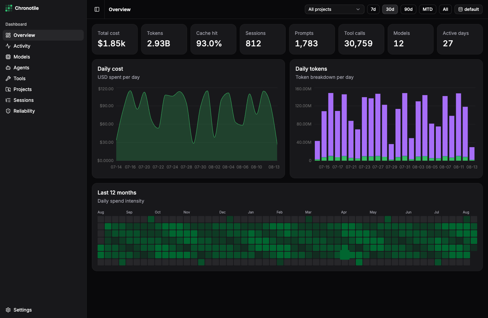

Every stat that matters
Spend, tokens (including reasoning and cache), models, agents, tools, projects, sessions, and errors — filterable by project and time range.
Cost, tokens, models, tools, and sessions — tiled by day. A native desktop dashboard for the data opencode already keeps on your disk.
Unsigned build — right-click the app and choose Open on first launch.

Just made legible. Filter by project, pick a range, drill into any session.
Spend, tokens (including reasoning and cache), models, agents, tools, projects, sessions, and errors — filterable by project and time range.
An incremental rollup cache answers every query in milliseconds, no matter how large your history grows.
Your opencode databases are opened read-only. Nothing is modified, nothing leaves your machine.
Drill into any session: messages, tool calls with durations, reasoning, file patches, and errors.
A 12-month calendar of daily spend or token intensity — the whole year at a glance.
Auto-detects the default opencode DB and lets you register any number more — e.g. per-profile databases from ocp.
The dashboard never touches your opencode database at query time. That's why it stays fast.
A Rust ingest engine opens each opencode SQLite database read-only and mirrors it into a compact local rollup cache — roughly 15 MB per 10 GB of sources.
Every cycle is an indexed range scan past a stored watermark. In-flight messages wait until their cost and tokens are final. Refreshed every 60 s.
The UI never queries opencode directly — it reads only from the local rollup. Instant, even alongside a running opencode.
Everything is local. opencode databases are opened read-only. Chronotile writes only to its own app directory. No telemetry, no network calls, no accounts.